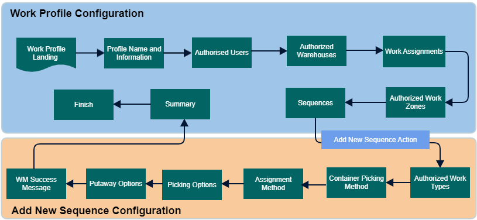

A work profile is a set of rules that define how work is done in the warehouse. Each rule is made up of one-to-many sequence records that define how work is initiated and completed.
A work profile can have multiple sequence rules, which are executed in order (for example, 10, 20, 30, etc.).
When there is no more work for a sequence rule, the system moves on to the next one.
A sequence rule specifies various work parameters, such as:
The work types that can be done in this sequence
The work initiator: user or system
The sequence of picking and putaway instructions assigned by the system

The work profile information includes Name and Description
Select the users who will process work based on this profile.
Select the warehouses to which this work profile has access.
A work team is a group of individuals that share the following characteristics: shared work zones, shared equipment types, and/or shared work profiles. To minimize setup time, you can create work teams for groups of employees, instead of creating individual user profiles for each employee. During work execution, the system will assign work to teams, based on the values that you establish on the work team record.
Select or create equipment type records that will process work based on this profile. Read Equipment Type Configuration.
Select the work zone(s) that users will be able to execute work from while using this profile.
Using sequences, users can configure Work Profile Sequence records.
Users can select an existing sequence record and add a new record. New Work Type wizard is displayed. Read Work Type for more information.